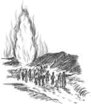
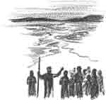

“Edward, you look quite gloomy today,” Grandpa said. “What’s the trouble?”
“Mom says God will help me not to be lazy, but it doesn’t seem that He will,” said Edward with a sigh. “I don’t feel like working at all.”
“Perhaps you’d like me to tell you a story?” said Grandpa. Edward pulled up a chair and Grandpa began.
Through the Red Sea
(From Exodus 14)
I know you have heard this story before, but think for a moment what it would be like to be there.
You have grown up as a slave in Egypt with no hope for a future. But now, after God has destroyed the Egyptians’ land, all the Hebrews are suddenly free. At least you will be free if Pharaoh’s army doesn’t catch up with you. Some scouts have already seen the dust of their chariot wheels.
“Lord, help us!” Mother cries. “Where can we go?” Father is upset and goes to tell Moses a thing or two, but there is really nothing that can be done. The whole camp is trapped between the hills and the great sea stretches out in front. Now everyone is shouting and all the animals are starting to panic. It really looks like a disaster.
Father brings Moses’ message. “Stand still and see what God will do.” Stand still and be destroyed? No, and see what God will do. Father points up in excitement, “The Lord promised that we shall see the Egyptians no more, and just look! The great pillar of cloud that has led us through the desert is going around behind, blocking off Pharaoh’s army.” What is going on?
You run to the edge of the shore and feel a strong east wind whip at your clothes. Moses is up on a big rock holding out his staff. Giant waves are rippling out across the water in a great furrow, and you feel your neck prickle. “The Lord said that we’ll go across the sea on dry ground,” your uncle says. “We must get our carts and flocks ready!”
As darkness falls, an amazing procession starts down to the shore. “Oh, just see the Lord’s pillar is making a shining path for us!” Mother says. You find yourself in the eager pushing crowd crossing the rocky sea bed, with high walls of water rising on either side. Everyone is in a rush to get across, but it is so amazing you just have to put out your hand to feel the water. It’s real all right. Wet and cold.
You are scrambling up the far bank when the sun comes up. Beyond the dark mass of escaping Hebrews you see flashes of copper. The Egyptian army is following you across! Just when you feel ready to panic, you hear angry shouts and wild cries. Moses is holding up his staff and the walls of water are collapsing around Pharaoh’s army! Soon all you can see is the wet cold sea and floating pieces of chariots. Surely Moses is right. The Lord has delivered His people and cast their enemy into the sea!
“It was really amazing, wasn’t it?” Edward said.
“By faith they passed through the Red Sea as by dry land,” Grandpa quoted. “It is listed in the Hall of Faith in Hebrews 11.”
“Hall of Faith?” asked Edward. “What is that?”
“A list of people that trusted in God to do things that were too hard for them,” said Grandpa. “Like subduing kingdoms and stopping the mouths of lions.”
“They must be real heroes,” said Edward.
Grandpa chuckled. “Heroes? I should say that they were ordinary people that found an extraordinary source of power. But God has that same power to overcome your enemies, if you will put your faith in Him.”
“Which enemies?” asked Edward.
Grandpa winked. “Real, terrible enemies. God loves to stop the mouth of Lion Lazy.”